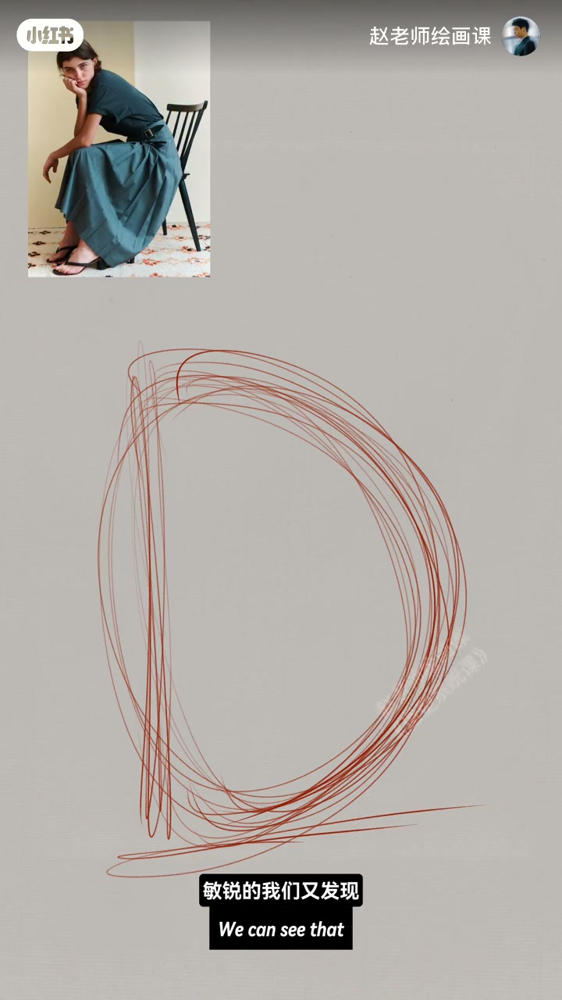
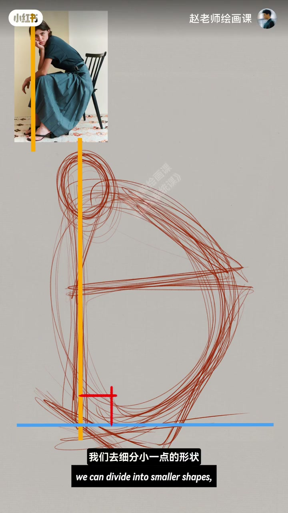
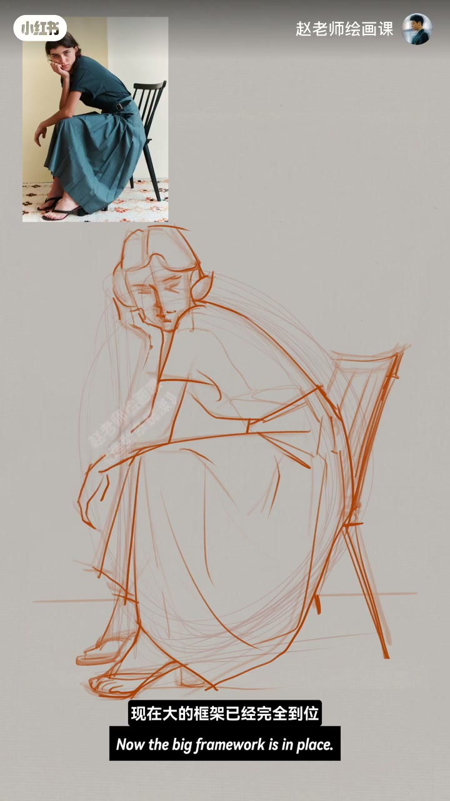
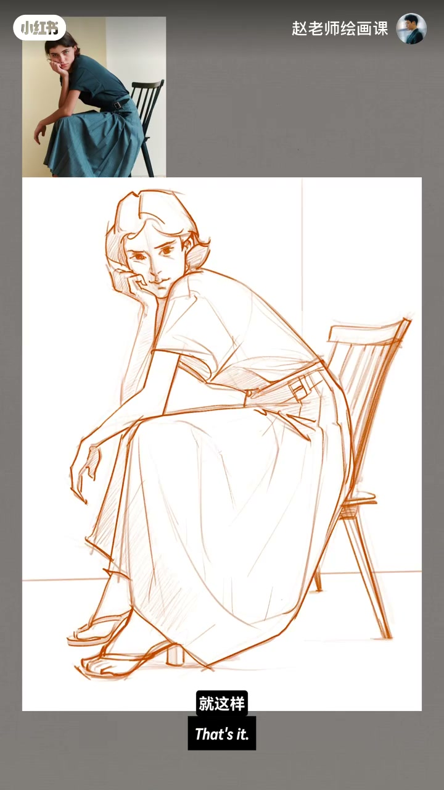

内容要点
人物动态难吗？示范坐姿抓形：先用曲线快速找外轮廓（半月形），再认出圆、三角、梯形，加上垂线重心线；接着细分躯干、手臂、脚与凳，头部用十字线定动态。步骤就是先抓大型再找小型——动态与比例先准，五官与手再带出。大框架到位后细化本质仍是继续分更小形状。素材放评论区。
知识结构
外轮廓→几何形→重心线→躯干四肢凳。
框架到位后自由发挥；细化＝继续分小形。
动态不难在细节，而在顺序：外轮廓与重心先锁住，再分层长到五官——先大型后小型。
00:00-01:02坐姿抓形：外轮廓到重心线
开场问人物动态难吗，随即示范坐姿抓形。一开始用曲线快速找出人物外轮廓，有点像半圆形月亮；再发现里面存在圆形、三角、梯形；还有一条垂线——注意，这是重心线。
接着细分小一点的形状：躯干、手臂、脚和凳子；头部画两根十字交叉线快速定头的动态。00:20 大红 D 形与 00:35 重心线是步骤可视化。


01:02-01:43框架到位后再细化
继续细分头发分组、五官、胳膊转折、腰与脚的前后关节。用的就是先抓大型再找小型：人物动态和比例已经很准确，五官位置与手细节也可跟着带出。现在大框架完全到位，剩下可自由发挥——习惯从头部细化，本质仍是继续细分更小形状。
简单几笔可顺利完成。素材放评论区；想系统学会抓形技巧，课程见。


完整转录（26段）
以下文本由 Whisper medium 模型自动转录，可能存在少量识别误差，已尽可能修正。
人物动态很难画吗?
哈喽,同学们好
今天我们来示范一个人物坐姿的抓性练习
好,一开始我们用曲线快速地找出人物的外文括
它有点像一个半圆形的月亮
敏锐的我们又发现这里面存在圆形、三角、还有梯形这三个最明显的形状
对,这里还有一条垂线
注意啊,这是一条重心线
接着呢,我们去细分小一点的形状
比如躯干、手臂、和脚、还有凳子
头部呢,我们画两根十字交叉的线
这样可以帮助我们快速地确定头的动态
好,继续细分
比如头发分组、脸上面的五官、胳膊的转折、腰的位置,还有脚的前后关节
你看,我们用的就是先抓大型再找小型的步骤
人物的动态和比例就已经很准确了
那人物五官的位置和手的细节也可以跟着带出来了
现在大的框架已经完全到位
剩下的我们就可以自由发挥了
比如呢,我习惯是从头部开始细化
对,细化的本质还是继续来细分更小的形状
就这样,简单几笔就可以顺利完成了
快学动笔试试吧
素材呢,我放在评论区了,期待大家的美作
如果你也想学会这种抓型技巧画出漂亮的动态
我们2月2日课程见,拜拜